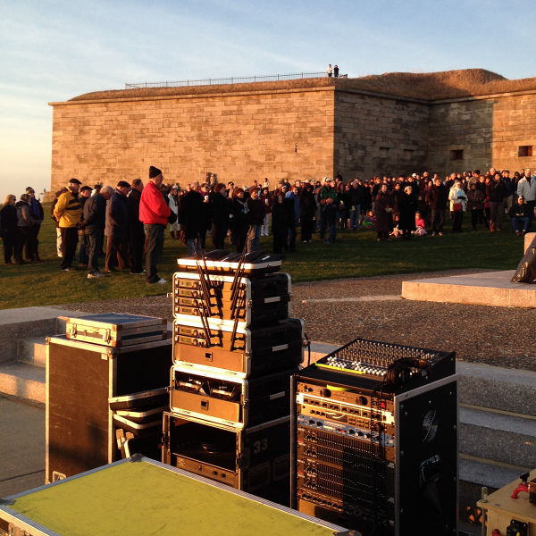

Some examples where using solar powered batteries has worked very nicely.
Easter Sunrise service at Castle Island in South Boston 3/31/2013.
It was the first year not using a traditional generator and it was very nice hearing the sounds of the Boston harbor in the background during the service.Taking less time to set up and not running 100' of power cord and 30' of Yellow Jacket was also nice!

photo
Powering one of the floats in the 2013 Saint Patricks Day parade in South Boston.
"Cool!" -the response from the Boston Police Truck team assigned to inspecting all of the floats when they asked where we were getting our power from. No noise, smell, gas cans or permits required! ... Though the heat thrown off of a generator might have been nice ... We had a high temperature of 37 degrees for the 6 hour gig! BRRRRRRR!!!!!
Winchester Town Day 2012 / 2013. (Photos of the first show?)
Powering the small sound system on the Town Common with batteries solved the problem of running 100' of power cord through a very crowded public space to get to the closest electrical outlet.
photo
photo
Boston Pops Brass Ensemble in Franklin Park 6/_/2012. (Photos of the second show?)
Classical music in the beautiful Frederic Olmstead park setting with no generator running in the background!
Having the client ask "when are you going to turn it on?" Was a real eye opener ... It was on!
NO NOISE!
Ideal event.
Where a small sound system is needed for a long day ... No need to refuel a generator ... And with no generator noise to compete with ... A much smaller sound system would be needed.
With a generator power / electricity is produced at a constant rate and you use what you need ... With any extra power /electricity from the generator being wasted.
With a battery system power / electricity is pulled out of the battery only as it is needed with the rest of the power / electricity staying in the battery.
The power / electricity needs of a sound system vary with how loud the sound is ... And can be substantial as things get loud ... the bass drum, for example, can require a lot of power / electricity to amplify it ... but the sound only lasts for a very short time and the high current needed to amplify the bass drum is also required for a very short time ... the sound system would draw a lot of power / electricity from the battery for that very short time ... and draw almost nothing from the battery until the bass drum was used again ... leaving the rest of the power / electricity in the battery ... until it is needed ... Wasting almost no power / electricity.